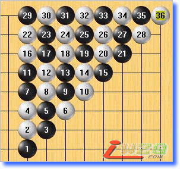

只有解放天元，才能够让棋手真正意识到天元的价值
TJ（Tian Jing）规则：无禁,黑先白后,每5子算1连,满盘连多者胜，黑让半连。
限制没有未来，解放才能重新获得限制下的期待。是的，只有简单，才能真正解决五子棋现有的困难，无法普及不是因为规
则本身具有缺陷，而是因为复杂的框架，使得无禁有禁棋手们无法保持一个起点！
但是，至今虽然很多人呼吁解放天元，但想法都比较简单，仅仅是谋求更多的变化而已。
而我的规则打破常规，完美地利用现有的空间，让天元成为解放后最好的一点，这是本规则照顾有禁棋手的又一个方面。
我已经阐述了很多关于这个规则的优势，比如在"连珠----新规则"一贴（ShowPost.asp?PageIndex=1&ThreadID=3419）五楼和十楼的回复就是一个证明。
现在不管是无禁还是有禁，第一手都被限制在了天元，但是一部分人并不明白，这一中心点，到底因什么意义而存在？他们
并不了解这个概念。
而我的规则解放了天元后，也把这个概念真正的明确化，这是一个空间控制的问题！请看，1、3、6、10、15、21、28、36
组成的斜线，10成为了一个分水点，15、21、28、36便成为了必败。

在这条斜线上，数字越大意味着价值越小，虽然不见得一定但简单来说，36和28之间的价值相差8，而28和21之剑的价值相
差7，以此类推，看起来很有规律的摆放，其实都包含优势的成分。
斜线上越靠近天元的子价值就越大，而天元的价值最大，它不仅仅因为摆放在中央而产生了对称美，而且也是我规则框架下
最好的开局。
而我的规则解放了天元后，也把这个概念真正的明确化，这是一个空间控制的问题！
在我的规则下，黑棋和白棋都必须想办法限制对方空间并且发展自己空间，而在天元下第一手，将会在四周获得最大的空间
。
也就是说，满盘255个点，真正意义上最好的一点还是在天元，因为真正只有这一点，才能让黑棋充分表现自己。
同样，越接近天元差距就越小，就像6和3的差距有3，3和1的差距只有2一样。在实际研究中，也许3和1的差距甚至不到百分
之一，不像10和15差距那么大，但足以证明这两个点的区分很有必要。
我的规则并不限制第一手走在哪里，但是我会让棋手们自己去领悟，他们只要稍微研究一下，就会明白天元会是最好的一点
，这将比现有无用的限制好得多，用理论而不是强制的规则来疏导，才能够让天元的价值更加深入人心。
越靠近边线越被动，越靠近天元越主动，我相信这个规则，可以让人自主地把第一步下在天元，而不是用规则去强迫。
它将是现有规则中最简单的，也是最复杂的。